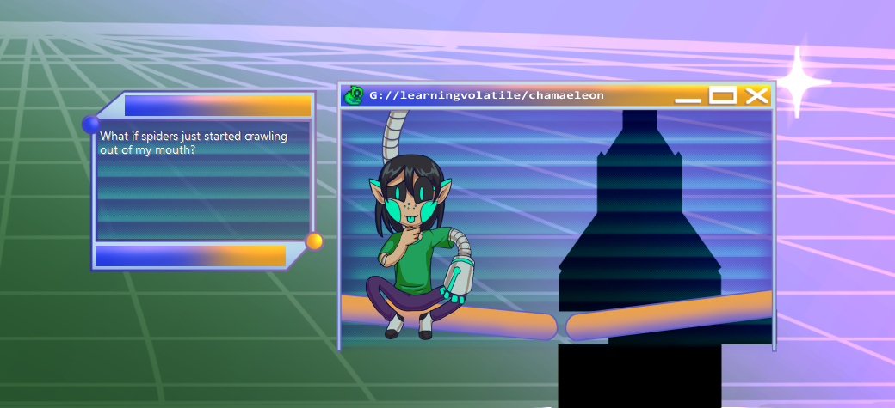

Gel, Your Wonderful New Assistant Who Is Totally Legit
Gel is a friendly, but somewhat claustrophobic AI assistant who is from a dystopian, megacorporation focused future. Their primary focus is reacting to the user, featuring a flux of emotions reflecting the specifics of their environment. Even when set to be silent, Gel should remain lively in their expressions. They were initially released March 16th, 2022.
Gel is overtly cheery when they are first on the user’s computer, but will warm up and become a sassy, random presence as they seek to understand the human condition and meme culture.
The ghost in general contains warnings for discussion of trauma and captivity. The negative route may contain blood and injury.
They have many features:
- Time-based interactions
- Unlockable questions
- Dressups they choose each day on their own
- A seeding system creating 5000 unique Gel possibilities
- A context system that changes the meaning of certain interactions
- Nine different emotion-states
- AFK detection and greetings
- A silent mode
- Sleeps based on the user's habits
- Multiple saves unlock at max friendship
- Remembers your friends
- May be injured
- Way too much worldbuilding
- You can high five them! :)